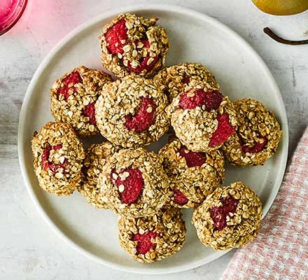

Healthy Cookies

Description
Grab a few of these energy-boosting healthy cookies for a quick breakfast, or offer as snacks to bridge the hunger gap before dinner.
Enjoy with yogurt and fruit.
Ingredients
- 2 ripe bananas, mashed
- 150g porridge oats
- 2 tbsp ground almonds
- 1⁄2 tsp cinnamon
- 100g raspberries (fresh or frozen)
Steps
- Heat the oven to 200C/180C fan/gas 4 and line two baking trays with baking parchment.
- Mix the banana, oats, almonds, cinnamon and a pinch of salt in a bowl to make a sticky dough.
- Gently stir through the raspberries, trying not to break them up.
- Scoop up tablespoons of the mixture and roll into balls, then place on a baking tray and flatten with your hand.
- Bake for 15 mins until the cookies feel firm around the edges and are golden brown. Leave to cool. Will keep in an airtight container for up to three days.
back